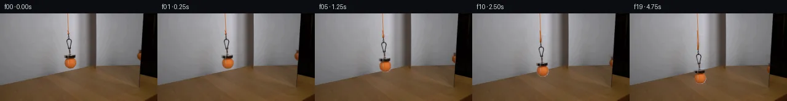

![首帧]()

Round 00
2026-11-05T13:04:27.016236+00:00像素候选变化代码 +220/−0inspection 更新
pixels 02ed3dfd2bc5c3fb · code 7d275804aca57fc6
查看本轮 generate.py 真实 diff
--- previous/generate.py
+++ current/generate.py
@@ -0,0 +1,220 @@
+"""PixelWorld continuation using local image matting, inpainting and translation."""
+from pathlib import Path
+import json
+import re
+import base64
+import numpy as np
+from PIL import Image, ImageDraw
+from scipy.ndimage import gaussian_filter, maximum_filter, map_coordinates
+from scipy.optimize import least_squares
+from artifact_io import save
+
+ROOT = Path(__file__).resolve().parent
+H, W = 144, 256
+Y, X = np.mgrid[:H, :W].astype(float)
+SOURCE = np.asarray(Image.open(ROOT / 'first_frame.png').convert('RGB'), dtype=np.uint8)
+S = SOURCE.astype(float)
+
+
+def translate(a, dy):
+ coords = np.array([Y - dy, X])
+ if a.ndim == 2:
+ return map_coordinates(a, coords, order=1, mode='constant', cval=0.0, prefilter=False)
+ return np.stack([map_coordinates(a[..., c], coords, order=1, mode='constant', cval=0.0, prefilter=False) for c in range(a.shape[2])], axis=-1)
+
+
+def smoothstep(t):
+ t = np.clip(t, 0, 1)
+ return t * t * (3 - 2 * t)
+
+
+def wall_under_real_object():
+ """Hermite reconstruction between intact pixels on both sides of the setup."""
+ b = S.copy()
+ xl, xr = 102, 127
+ z = (np.arange(xl, xr + 1) - xl) / (xr - xl)
+ v0 = S[:93, xl]
+ v1 = S[:93, xr]
+ # Average several columns to avoid amplifying single-pixel grain.
+ slope0 = (S[:93, 102] - S[:93, 99]) / 3
+ slope1 = (S[:93, 130] - S[:93, 127]) / 3
+ interp = ((2*z**3-3*z**2+1)[None, :, None] * v0[:, None] +
+ (z**3-2*z**2+z)[None, :, None] * (xr-xl)*slope0[:, None] +
+ (-2*z**3+3*z**2)[None, :, None] * v1[:, None] +
+ (z**3-z**2)[None, :, None] * (xr-xl)*slope1[:, None])
+ b[:93, xl:xr+1] = interp
+ return b
+
+
+REAL_BG = wall_under_real_object()
+# The support includes antialiasing pixels; the inside of the hanging clip is transparent.
+chroma = (S[..., 0] - S[..., 1]) - (REAL_BG[..., 0] - REAL_BG[..., 1])
+darkness = np.max(REAL_BG - S, axis=-1)
+cord_roi = (X >= 108) & (X <= 114) & (Y <= 34)
+cord_support = cord_roi & ((chroma > 3.0) | (darkness > 5.0))
+rigid_roi = ((X >= 106) & (X <= 118) & (Y >= 34) & (Y < 68)) | ((X >= 103) & (X <= 124) & (Y >= 68) & (Y <= 75))
+hardware_support = rigid_roi & (darkness > 5.0)
+ball_roi = ((X-114.5)/10.8)**2 + ((Y-81.7)/10.5)**2 < 1
+ball_support = ball_roi & ((chroma > 3.0) | (darkness > 7.0))
+# Matting derives fringe opacity from color separation and keeps the opaque ball core.
+ball_distance = np.sqrt(((X-114.5)/9.7)**2 + ((Y-81.6)/9.3)**2)
+ball_alpha = np.clip((1.065 - ball_distance) / 0.115, 0, 1)
+ball_alpha = np.maximum(ball_alpha, np.clip(chroma / 76.0, 0, 1)) * ball_support
+hardware_alpha = np.clip(darkness / 95.0, 0, 1) * hardware_support
+# Thin wires are antialiased by the opacity inferred from their dark outline.
+cord_alpha = np.clip(np.maximum(chroma / 58.0, darkness / 75.0), 0, 1) * cord_support
+rigid_alpha = np.maximum(ball_alpha, hardware_alpha)
+rigid_support = (rigid_alpha > 0) & (Y >= 34)
+real_support = cord_support | rigid_support
+BG = S.copy()
+BG[real_support] = REAL_BG[real_support]
+rigid_premul = np.zeros_like(S)
+rigid_premul[rigid_support] = S[rigid_support] - (1-rigid_alpha[rigid_support, None]) * REAL_BG[rigid_support]
+cord_premul = np.zeros_like(S)
+cord_premul[cord_support] = S[cord_support] - (1-cord_alpha[cord_support, None]) * REAL_BG[cord_support]
+
+# Reconstruct the wall just behind the partly occluded mirror reflection.
+MIRROR_WALL = S.copy()
+for y in range(H):
+ # The reflection is well to the right of these untouched wall/surface samples.
+ cols = np.arange(216, 223)
+ coeff = np.polyfit(cols, S[y, cols], 1)
+ MIRROR_WALL[y, 223:236] = np.clip(np.polyval(coeff, np.arange(223, 236)[:, None]), 0, 255)
+
+# Fit the stationary dark mirror edge using only rows without the reflection.
+fit_rows = np.r_[np.arange(12, 58), np.arange(79, 98)]
+fy, fx = np.meshgrid(fit_rows, np.arange(225, 235), indexing='ij')
+obs = np.clip((S[fy, fx, 0]-2) / np.maximum(MIRROR_WALL[fy, fx, 0]-2, 1), 0, 1)
… diff truncated; 133 more lines …